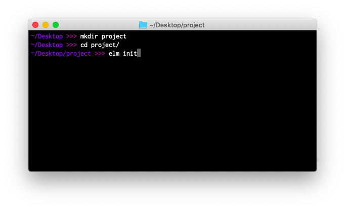

Elmをインストールする
前のページでは、Elm用のコードエディターをインストールする方法を説明しました。次はelm という実行可能ファイルを取得してみましょう。こちらがインストール用のリンクです。
インストールが終わったら、コンピューターのターミナルを開いてください。Windowsでは、cmd.exeまたはコマンドプロンプトと呼ばれることもあります。

まずはターミナルでデスクトップに移動しましょう。
# Mac、Linux
cd ~/Desktop
# Windows (<username> にはあなたのユーザー名が入ります)
cd C:\Users\<username>\Desktop
次のステップはelmコマンドに慣れることです。私自身はターミナルのコマンドを覚えるのに本当に苦労したので、elmコマンドは使いやすいように頑張って作りました。よく使うコマンドをいくつか見ていきましょう。
elm init
以下のコマンドを実行すると、Elmのアプリケーションやライブラリを作成するために必要なファイルが自動的に生成されます。
elm init
このコマンドを実行してみましょう。elm.jsonというファイルと、src/というディレクトリが作成されるはずです。
elm.jsonには、プロジェクトの情報が書かれています。src/にはすべてのElmファイルが入っています。
それでは、エディターでsrc/Main.elmというファイルを作って、ボタンのサンプルからコードをコピーしてみましょう。
elm reactor
elm reactorを使うと、ターミナルで毎度ごちゃごちゃ頑張らなくてもElmプロジェクトをビルドできます。次のように、プロジェクトのルートディレクトリで以下のコマンドを入力してみてください。
elm reactor
サーバーがhttp://localhost:8000で起動します。このサイトではどのElmファイルにも移動できて、どんな感じになるか見ることができます。elm reactorを実行して、localhostへのリンクを開き、src/Main.elmファイルを確認してみてください！
elm make
次のようなコマンドを使うと、ElmのコードをHTMLやJavaScriptにコンパイルできます。
# ブラウザで開くことができるindex.htmlファイルを作成します。
elm make src/Main.elm
# 自前のHTMLドキュメントに埋め込むための最適化されたJSファイルを作成します。
elm make src/Main.elm --optimize --output=elm.js
これらのコマンドをローカルにあるsrc/Main.elmファイルに対して実行してみてください。
elm makeはElmのコードをコンパイルする最も一般的な方法です。プロジェクトがelm reactorでコンパイルするには高度過ぎるようになったら極めて有用です。
このコマンドを実行すると、オンラインエディターやelm reactorで表示されたものと同じメッセージが表示されます。これまでに年単位の時間をメッセージの改善に費やしてきましたがわかりにくいメッセージがありましたらこちらに報告してください。きっと改善できると思います！
elm install
Elmのパッケージは全てpackage.elm-lang.orgに置かれています。
例えばHTTPリクエストを組み立てるためにパッケージを探してelm/httpパッケージとelm/jsonパッケージをプロジェクトに追加したいと思ったら、以下のコマンドでインストールすることができます。
elm install elm/http
elm install elm/json
このコマンドはelm.jsonに依存関係を追記して、プロジェクトで利用できるようにします。これにより、プログラムでimport Httpできるようになり、Http.getのような関数を使うことができます。
ヒントとコツ
その1、全てを覚えようとする必要はありません！
elm --helpを使うことで、いつでもelmコマンドでできる全てのことについて、概要を確認できます。
また、elm make --helpやelm repl --helpのようにコマンドを実行して、各コマンドに関するヒントを得ることもできます。これはどのフラグが利用可能か、何をするコマンドなのかを確認したいときに便利です。
その2、もしターミナルの操作全般に慣れるまでに時間がかかっても心配ありません。
私はもう10年以上ターミナルを使っていますが、ファイルを圧縮する方法や、ディレクトリ内のすべてのElmファイルを見つける方法などをいまだに覚えられません。今でもたくさんのことを調べています！
これでエディターの設定が完了し、ターミナルでelmコマンドを使えるようになりましたので、Elmの学習に戻りましょう！